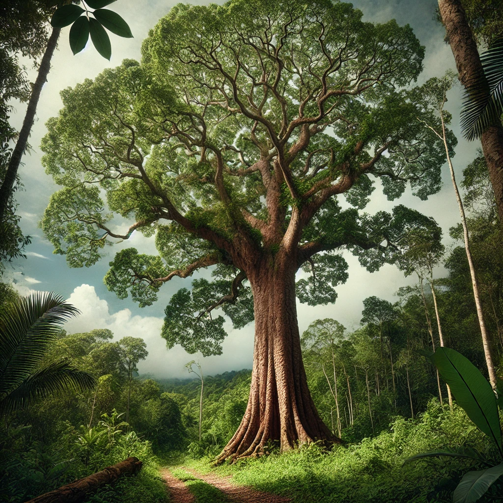
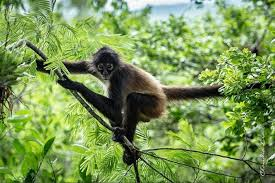

El árbol Ramón (Brosimum alicastrum), también conocido como ojite, masica, capomo, entre otros nombres, es una especie nativa de gran importancia en la región de Petén, Guatemala. Este gigante del bosque ha sido parte esencial del ecosistema y de la cultura local por siglos. En el corazón del mundo maya, el árbol Ramón no solo se destaca por su imponente presencia física, sino también por su multifuncionalidad y valor ecológico.
El ramón se distingue por su tronco recto y su amplia copa, que ofrece sombra y refugio a una variedad de fauna. Su corteza es de un tono grisáceo y su madera es densa, lo que la hace resistente. Las hojas, de forma ovalada y color verde brillante, contribuyen a la fotosíntesis, lo que lo convierte en un excelente aliado en la lucha contra el cambio climático.
Históricamente, las semillas del ramón han sido un alimento básico para las comunidades indígenas, ya que son ricas en nutrientes y pueden consumirse tostadas o molidas. Además, las hojas y el fruto se utilizan en la medicina tradicional para tratar diversas dolencias. En la actualidad, el árbol también se cultiva por su madera, que es valorada en la construcción y la fabricación de muebles.
El ramón juega un papel crucial en el ecosistema. Su densa sombra ayuda a mantener la humedad del suelo y favorece el crecimiento de otras plantas. Además, al ser un árbol nativo, contribuye a la biodiversidad local, proporcionando hábitat para aves, mamíferos e insectos. Su capacidad para fijar carbono lo convierte en una especie importante en los esfuerzos de reforestación y mitigación del cambio climático.
A pesar de su resistencia, el árbol Ramón de Petén enfrenta amenazas debido a la deforestación y el cambio de uso del suelo. La conservación de este árbol es esencial no solo por sus beneficios ecológicos, sino también por su valor cultural y económico. Iniciativas comunitarias y proyectos de reforestación buscan proteger y promover el cultivo del ramón, asegurando que las futuras generaciones puedan seguir disfrutando de sus múltiples beneficios.
El mono araña (Ateles geoffroyi), una de las criaturas más fascinantes de los bosques tropicales de Petén, Guatemala, es conocido por su agilidad, inteligencia y por su importante papel en la ecología de la selva. Sus largos brazos y su cola prensil lo convierten en un acróbata natural de las copas de los árboles, y su papel como dispersor de semillas ayuda a mantener la biodiversidad de los ecosistemas que habita. Sin embargo, este primate está amenazado debido a la pérdida de hábitat y la caza, por lo que su conservación es esencial para el equilibrio ecológico en la región.
El mono araña habita en las densas selvas tropicales de Petén, donde pasa la mayor parte de su vida en las copas de los árboles. Su dieta principal está compuesta por frutas, pero también consume hojas, flores y, ocasionalmente, pequeños insectos. Al ser un dispersor de semillas, el mono araña contribuye de manera directa al crecimiento de nuevas plantas, lo que es vital para la regeneración de los bosques. Su preferencia por los grandes árboles y las selvas densas lo hace particularmente sensible a la deforestación, ya que necesita vastos territorios para alimentarse y reproducirse.
Los monos araña son altamente sociales y se organizan en grupos que pueden incluir hasta 40 individuos. Sin embargo, estos grupos grandes suelen dividirse en subgrupos más pequeños durante el día para buscar alimento, lo que se conoce como “fisión-fusión”. Esta estructura social flexible les permite adaptarse mejor a los cambios en la disponibilidad de alimentos. Son conocidos por su capacidad para resolver problemas y usar herramientas simples, lo que demuestra su alto nivel de inteligencia.
El mono araña juega un papel crucial en el equilibrio ecológico del bosque tropical. Su dieta, compuesta principalmente de frutas, lo convierte en un dispersor clave de semillas a lo largo de grandes áreas del bosque, favoreciendo la regeneración de las plantas y la biodiversidad. Sin los monos araña, muchas especies de árboles enfrentarían dificultades para propagarse, lo que tendría un impacto en cascada en el resto del ecosistema. Además, su presencia es un indicador de la salud del bosque, ya que solo habita en selvas relativamente intactas.
